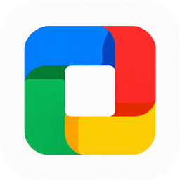

个人工作台 · 学习与信息管理
完整项目介绍 · 68 秒 · 1080p / 30fps · 静音
将课程与资料、关注资讯、公众号阅读和多账号邮箱整合到同一个日常入口，支持 AI 文章总结、HTML 解读与课程资料保存到 ima。基于开源 Glance 搭建，本人负责需求设计、系统集成与使用验收，采用 AI 辅助开发。
视频中的 Gmail 和 YouTube 邮箱使用演示信息，课程与学业画面来自录制时的实际使用。AI 总结与 HTML 解读使用已标注的历史功能截图。查看媒体来源与处理说明。